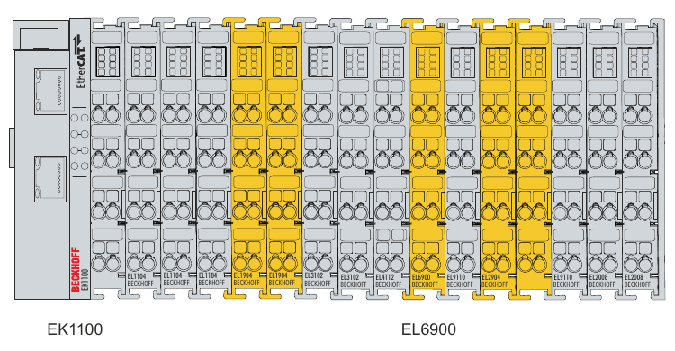

Robot safety
Industrial robots can remove people from heavy, repetitive, dirty, and dangerous work. At the same time, a robot cell combines powerful motion, automatic control, tools, workpieces, and other machinery. Safe automation therefore depends on the complete application and on how people actually work with it, not only on the robot arm.
Robot safety is not a feature that can be added after the cell has been designed. It is a chain of decisions connecting the work people need to perform with the layout, equipment, control system, working procedures, and checks on the finished installation. A useful question throughout this process is:
During each task, when can a person come close to something dangerous, and what prevents that situation from causing injury?
The first half of the question directs attention to people, tasks, access, and unusual situations such as cleaning or fault recovery. The second half requires a concrete explanation of how the danger is removed, separated, detected, limited, or otherwise controlled. That explanation must still make sense when equipment fails, someone needs access, or the application changes.
A hazard is something with the potential to cause harm. Risk describes how serious that harm could be and how likely it is to occur in the situation being considered. A robot can remain a hazard even when protective measures have reduced the associated risk.
A risk assessment is the structured and documented process used to work through this reasoning. You examine the tasks and people involved, identify hazards and possible harm, decide where further risk reduction is needed, and record the assumptions behind those decisions. Risk reduction then changes the design or adds protective measures. The finished measures must be implemented, tested, maintained, and reconsidered when the cell or its use changes. This is the overall safety process that the rest of the page develops.
This page provides orientation for safety work, not a compliance procedure or a replacement for qualified work on a real installation. Safety requirements depend on the application, the workplace, and the rules in force. A real robot cell needs its own risk assessment, technical documentation, tests, instructions, and competent people. Do not copy dimensions, speed limits, or safety settings from a course example.
Start with tasks and access
The process starts with how people actually use and enter the cell. Normal automatic production is only one situation. Many serious situations arise when production has already gone wrong or when a person needs access to the cell.
For a typical robot application, consider tasks such as:
- transporting, installing, and commissioning the equipment;
- teaching positions and testing programs;
- loading or changing tools, fixtures, and workpieces;
- normal automatic production;
- clearing jams, troubleshooting, and recovering after faults;
- cleaning, inspection, maintenance, and repair; and
- modifying products, programs, or equipment later in the cell’s life.
For every task, identify who is involved, where they need to stand, which parts can move, and which forms of energy remain present. Include contractors, maintenance personnel, programmers, cleaners, and inexperienced operators, not only the person who normally starts production.
The Norwegian Labour Inspection Authority’s risk-assessment guidance emphasizes that risk assessment is a continuing process. Revisit it when the task, equipment, organization, or way of working changes.
Identify hazards in the complete cell
Once the tasks and access situations are understood, examine what could cause harm during each of them. The robot is only one part of that picture. Depending on the application, people can be exposed to:
- impact or crushing from the robot, external axes, fixtures, or automatic doors;
- trapping between moving equipment and a wall, fence, machine, or worktable;
- a dropped, ejected, sharp, hot, or incorrectly gripped workpiece;
- welding, cutting, lasers, fumes, heat, noise, or rotating process tools;
- electrical, pneumatic, hydraulic, gravitational, or stored mechanical energy;
- unexpected motion after a reset, program change, communication fault, or recovery action; and
- poor access, visibility, ergonomics, training, or work organization.
The rear of a robot can be as important as its tool. In a fatal incident in 1984, an operator entered the operating area of an automated die-casting robot, apparently to clear accumulated scrap. He was trapped between the moving rear of the robot and a fixed steel pole. The arm’s working area was the obvious hazard, but the robot’s rear movement created an additional crushing point.
The recommendations following the incident emphasized guarding the robot’s full operating area, preventing access to crushing points around fixed objects, interlocking access, using presence-sensing devices where appropriate, and training workers to understand all robot movements. These principles remain relevant even though robot technology has changed. See the official 1984 incident report and recommendations.
Record and evaluate the risk
The observations from the previous steps now become a working risk-assessment record. Another person should be able to follow the reasoning and check the decisions later. For each task or unwanted event, record:
- who is involved and what they are doing;
- the hazardous situation and possible injury;
- the technical and organizational measures already present;
- how serious the harm could be and how exposure could occur;
- important assumptions or uncertainties;
- additional measures, responsibility, and deadline; and
- how you will check the completed measures.
Consider an operator entering a cell to retrieve a dropped workpiece. The robot may be stopped, but the person could still be within reach of the robot, an automatic machine door, a pneumatic gripper, or a suspended load. The assessment must establish what prevents unexpected motion, which equipment is included in the stop, whether stored energy remains, and what must happen before restart.
Many assessment methods use a matrix, colour category, or numerical score to summarize estimated risk. These formats can help compare hazards and prioritize work, but the score is not the final result. The useful result is a set of measures with traceable reasons, named owners, and evidence that the measures work. The Arbeidstilsynet guidance provides a practical Norwegian starting point for documenting the process. For the formal machinery-safety framework, continue with ISO 12100 through authorized access.
Reduce risk in layers
Safety is strongest when hazards are addressed by the design itself. Warnings and personal protective equipment are useful for remaining risks, but they should not be the first or only measure considered.
A practical order is:
- Remove or reduce the hazard through design. Change the layout, process, tool, payload, speed, or access need. Eliminate unnecessary trapping points and keep hazardous motion no larger than the task requires.
- Separate people from hazardous operation. Fixed barriers, enclosed processes, and well-positioned access points can prevent routine exposure.
- Detect access and create a safe response. Interlocked gates, light curtains, laser scanners, and safety-related control functions can stop or limit relevant equipment when separation cannot be maintained physically.
- Organize the remaining work. Provide clear operating modes, isolation procedures, instructions, competence, supervision, maintenance, and suitable personal protective equipment.
Several layers are often combined. A fence may prevent ordinary access, an interlocked gate may stop the cell when opened, and an energy-isolation procedure may still be needed before maintenance. An emergency-stop button is a backup for an emerging dangerous situation; it does not replace measures that prevent the exposure in the first place.
Common protective measures
The following terms describe equipment you will commonly meet around robot cells:
- A fixed guard is a physical barrier that normally requires tools to remove. Perimeter fencing is a common example.
- An interlocked gate is connected to the safety-related control system. Opening it causes the defined hazardous functions to stop or become unavailable.
- A light curtain creates an optical detection field across an opening. It detects interruption of the field but does not physically stop a person.
- A safety laser scanner monitors a configured area. Different zones can, for example, request reduced operation and then a stop as someone approaches.
- A safety-related motion limit supervises a robot quantity such as speed, position, or permitted space using a function designed for a safety role.
- Energy isolation disconnects or restrains hazardous energy so maintenance work does not depend only on a stop command from software.
The name of a component does not establish that the completed solution is safe. Its position, coverage, response time, wiring, configuration, interaction with other machines, and behaviour during faults all matter.
Safety I/O and cell-level safety logic
A guard, gate switch, or scanner does not stop hazardous motion by itself. Its signal must be detected, evaluated, and connected to equipment that can produce the required response. This complete chain is a safety function. For example:
| Part of the function | Gate-access example |
|---|---|
| Input | An interlocked gate reports that access is open. |
| Logic | A safety relay, safety PLC, or robot safety controller evaluates the signal. |
| Output | The logic requests the relevant robot and other hazardous equipment to stop or remain inhibited. |
| Safe state | The specified hazardous motion is no longer available while access is open. |
| Reset and restart | Closing the gate does not start production; reset and start are deliberate, separate actions. |
The required safe state depends on the hazard. It can mean stopping motion, preventing a drive from producing torque, closing a valve, disabling a process, or switching the robot to monitored restrictions. It should be specified for all affected equipment, not described only as “stop the robot”.
Normal I/O and safety I/O
Ordinary I/O is used for production information and commands: a part-present sensor, a cycle-start request, a completed-operation signal, or a lamp on the operator panel. Safety I/O carries signals that form part of a safety function, such as an interlocked-gate state, a scanner protective field, a safeguard-stop request, or confirmation that a monitored safe state is active.
| Normal control | Safety-related control |
|---|---|
| Usually processed by the standard PLC program or robot task program | Processed by a safety relay, safety PLC, or built-in robot safety controller |
| Intended to control and coordinate production | Intended to achieve a specified protective response |
| A wiring, communication, or program fault can produce an incorrect value without the diagnostics needed for a safety role | Uses suitable monitoring and diagnostics so relevant faults cause or maintain the specified safe response |
| Useful for status, orderly stopping, sequencing, and messages | Used for the safety function itself when the assessment requires a dependable response |
Safety I/O commonly uses monitored channel pairs. The exact architecture depends on the equipment and required function. A normal input does not become safety-related because it is read twice, and an ordinary robot-program if statement does not become safety logic because the variable is named safe.
Safety-related data can be carried over the same industrial network as ordinary control data by using a dedicated safety communication protocol. Examples include PROFIsafe with PROFINET or PROFIBUS, CIP Safety with EtherNet/IP, and FSoE, short for Fail Safe over EtherCAT, with EtherCAT. These protocols do not assume that the underlying network is free from faults. Instead, the safety layer at the sending and receiving devices checks information such as message identity, order, timing, and integrity. Sharing the physical network does not make ordinary fieldbus data safety-related.
Where is the safety logic implemented?
Robot cells often distribute safety-related control across several devices:
- The robot safety controller supervises built-in robot functions such as stops, monitored standstill (a stopped state supervised by the safety controller), speed or position limits, and configured safety inputs and outputs.
- A safety relay can implement a small number of fixed functions, such as connecting one interlocked gate to stop inputs.
- A safety PLC is useful when several guards, scanners, operating modes, robots, conveyors, positioners, or process machines must be coordinated.
- The standard PLC still manages the production sequence, displays status, requests orderly actions, and starts the process only after the safety system permits operation and the normal process conditions are satisfied.
Some PLC platforms can execute the standard control program and a separately managed safety program in the same controller or industrial PC. Such a system can connect to both standard I/O modules and safety-rated I/O modules, sometimes mounted side by side in the same modular I/O station. Production sensors and actuators normally use the standard modules, while devices and outputs that form part of a safety function use suitable safety modules. Sharing a controller, engineering environment, backplane, or network does not remove this distinction. Where a response is required for safety, it must not depend only on ordinary PLC code, ordinary fieldbus data, or the robot’s task program.
Figure 1 shows one possible hardware arrangement. In this example, the safety logic is implemented in a dedicated TwinSAFE logic terminal; other Beckhoff architectures can execute the safety program in a safety runtime on an industrial PC.

A robot stop also does not automatically stop the rest of the cell. A gripper may retain stored pneumatic energy, a positioner may continue moving, or a process machine may remain hazardous. The safety function therefore needs a clear span of control: the robot and every other item of equipment that must respond to that input.
Example: requesting access through an interlocked gate
A simple cell can use the following sequence:
- The operator requests access. The standard PLC can finish the current step and request an orderly process stop.
- The gate switch is monitored through safety I/O. Opening the gate activates the safety logic even if the ordinary sequence has not stopped correctly.
- The safety logic commands the robot and every other relevant hazard into the specified safe state.
- Hazardous operation remains inhibited while the gate is open.
- Closing the gate restores the safeguard but does not restart the cell. A deliberate reset confirms that the protective arrangement is restored.
- A separate start command is required before automatic production resumes.
If a person can enter fully and remain hidden inside the cell, closing the gate and pressing reset may not be sufficient. The design can require visibility from the reset position, presence detection, a trapped-key arrangement, or another measure selected for the actual access situation.
As one vendor example, current UR controllers provide dedicated and configurable safety I/O for functions such as safeguard stop, emergency stop, reduced mode, and safety status. The UR Safety I/O documentation also shows an interlocked-door example. Other robot and PLC platforms use different terminals, software, and communication systems, but the same input-logic-output reasoning applies.
Collaborative applications
A robot sold as a cobot does not make the complete application safe by itself. The attached tool, workpiece, speed, layout, possible contact, trapping points, and surrounding equipment determine whether close human access is acceptable. A rounded, force-limited arm carrying a sharp part or a hot welding torch can still create severe hazards.
There is no universal safe cobot setting. You must assess the actual application, including possible contact and trapping situations, the tool and workpiece, and the surrounding equipment. For applications that rely on power and force limiting, ISO 10218-2:2025 specifies biomechanical force and pressure limits for different body regions. Consult the standard for these limits and the other requirements and guidance that apply to collaborative industrial robot applications.
Begin by asking why a person must be close to powered motion. Conventional separation may be simpler when access is only occasional. Where people and robots must work near one another, sensing, speed and separation, force limitation, hand-guided operation, and suitable transitions between operating states can be relevant. Their suitability still depends on the task.
Worked case: a UR palletizing application
The free Universal Robots risk-assessment e-learning turns the general process into decisions for a palletizing application. Module 1 introduces the assessment loop, while Module 2 applies it using examples that include safety planes, reduced settings, and joint limits. Together, the modules take approximately 50 minutes and require a free UR Academy account.
The course shows how one application can be assessed and how selected measures can be implemented on a UR controller. Its layout, hazards, assumptions, and settings do not become correct for another cell merely because that cell also uses a UR robot or performs palletizing.
The activity applies the process from Section 3 in a concrete sequence:
- define the task, the people involved, and the limits of the application;
- identify hazardous situations, possible harm, and how exposure can occur;
- select measures that reduce the identified risk;
- reassess the application after introducing the measures; and
- check the finished functions and document remaining assumptions.
Other details belong to the particular case. The box mass, stack height, gripper, layout, access needs, and possible trapping points are application-specific. The safety menus, function names, available limits, and configuration workflow are UR-specific. Keep these two categories separate from the general assessment method.
| Engineering purpose | UR concept to examine in the activity | Possible implementation elsewhere |
|---|---|---|
| Restrict where the robot may move | Safety planes and joint-position limits | Monitored workspaces or protected spaces on another platform; physical safeguards may still be needed |
| Use more restrictive motion limits in part of the task | Reduced settings selected through the UR safety configuration | Safe speed selection through a scanner or safety PLC, or stopping and preventing access |
| Limit the consequences of permitted contact | Limits for quantities such as speed, force, momentum, and power | Power-and-force limiting on a suitable platform, or separation from powered motion |
Do not interpret these functions as people detection. A UR safety plane is a configured boundary for monitored robot geometry; the exact geometry covered depends on the controller and software version. Reduced means that an alternative, more restrictive set of safety limits is active. A plane or an external safety input can request this state, but neither function senses a person. See the UR safety-plane documentation and UR safety-functions overview.
Other suppliers can support similar engineering goals without using the same names or implementation. For example, KUKA.SafeOperation provides monitored workspaces, protected spaces, and velocity monitoring, while ABB SafeMove provides safety functions integrated with ABB controllers. These are not direct one-to-one replacements for UR settings: supported robot geometry, hardware, software options, interfaces, limits, and validation procedures differ. A conventional high-speed cell may instead use perimeter guarding and interlocked access because close operation with people is unnecessary or unsuitable.
The course materials include the blank risk-assessment template used in the UR activity. It provides a structure for the transfer exercise below, but you must complete it from the conditions of the new application.
Simulation as a safety tool
Safety should be considered from the beginning of an automation project, not added after the cell has already been designed. Simulation makes it easier to evaluate layout, motion, process, and control ideas before equipment is purchased or installed and while changes are still inexpensive.
Risk assessment depends on understanding where equipment and people can be, how the process develops over time, and what can happen when normal production is interrupted. In a Visual Components model, you can:
- inspect the robot, tool, workpiece, external equipment, and access routes;
- look for collisions, trapping points, and insufficient clearance;
- compare layouts, loading positions, fences, and access points;
- step through production, teaching, cleaning, recovery, and maintenance; and
- use views and animations to discuss the design with the people who will operate and maintain the cell.
You can revise the model repeatedly as the project develops: move a pallet, alter an approach direction, reduce the robot’s working area, or change the process sequence and control logic.
Simulation does not approve or validate a real safety solution. Its conclusions are only as reliable as the geometry, motion, timing, control logic, faults, and human actions represented in the model. Stopping performance, gripping, sensor coverage, wiring, and installation details can differ on the real cell. Simulation can improve the design, but the finished installation still requires controlled physical commissioning and the checks described in Section 10.1.
Responsibilities through the cell life cycle
Responsibility is shared across the life of the application:
- The organization that designs and assembles the complete machine must address the safety of the resulting combination and provide the required documentation.
- The employer must ensure that equipment made available to workers is safe for its actual use, and must provide suitable information, training, inspection, and maintenance.
- Operators and maintenance personnel need task-specific competence and must use the agreed protective measures and report faults or unsafe changes.
During a project, safety work normally develops from the initial task description through design, installation, commissioning, and handover. The organization that will operate the cell contributes knowledge about products, cleaning, fault recovery, maintenance, and foreseeable changes. The Arbeidstilsynet machinery guidance provides an overview of manufacturer and employer responsibilities in Norway.
For further technical reading, consult ISO 10218-1:2025 for the industrial robot as a product and ISO 10218-2:2025 for the integrated robot application and cell. These links indicate where to continue reading; the requirements themselves are not reproduced here.
Commissioning and periodic checks
The measures selected during risk assessment must be demonstrated on the real installation. Plan the checks so nobody is exposed during the test. Begin under controlled conditions, then cover the operating conditions that matter for the assessment.
Examples include checking that:
- guards and openings control access as intended;
- each gate, scanner, and light curtain affects the correct equipment, and the hazardous functions remain inhibited while access is open;
- reset and start behave as specified without unexpected restart;
- measured stop time and distance support the placement of protective equipment;
- tools, workpieces, and stored energy remain controlled during stopping;
- relevant faults and loss of power or communication produce the intended response; and
- maintenance, recovery, instructions, and training match the finished cell.
Testing does not mean deliberately destroying equipment. Evidence can include controlled functional tests, measurements, inspection, technical documentation, and supporting simulation. Simulation does not replace the required checks on the real installation. At the same time, an important function cannot simply remain untested because stopping is mechanically unpleasant. Where safety depends on stopping performance, suitable manufacturer data or controlled measurements for the relevant application conditions are needed.
Changes after handover
Handover is not the end of the process. A new tool, payload, fixture, product, program, operating mode, access point, or surrounding machine can invalidate an earlier assumption. Review such changes before production resumes. Substantial rebuilding can also affect who carries the responsibilities of a machine manufacturer; see Arbeidstilsynet’s guidance for machinery production and modification.
Relevant standards and public guidance
The following sources provide the detailed requirements and guidance needed for work beyond this course introduction. Consult the standards through authorized access for real design and validation work.
| Resource | Practical relevance |
|---|---|
| ISO 12100 | General machinery risk assessment and risk reduction. |
| ISO 10218-1:2025 | Safety requirements for the industrial robot supplied by its manufacturer. |
| ISO 10218-2:2025 | Safety requirements for integrating industrial robot applications and cells. |
| Arbeidstilsynet: machinery | Norwegian overview of responsibilities and current machinery guidance. |
| Arbeidstilsynet: risk assessment | Public guidance for mapping hazards, evaluating risk, documenting measures, and following up. |
Exercises
- Choose a robot cell you know or have modelled. List the tasks that require human interaction across its life cycle. Select one task and draw the person, robot, tool, workpiece, and surrounding equipment. Mark the hazards.
- Use the Arbeidstilsynet guidance to document one unwanted event from your drawing. State your assumptions, select measures using the layers introduced on this page, and explain how you would check them.
- Read the historical incident report linked above. Identify one design issue, one access issue, and one organizational issue that contributed to the event.
- Design access protection for a manual loading station. Compare a fixed guard, an interlocked gate, and a safety laser scanner, then justify your choice. Draw the resulting input-logic-output chain, span of control, reset, and restart.
- Complete both modules of the Universal Robots e-learning. Then use the course template to assess a different application modelled in Visual Components. Identify which reasoning is general, which choices are application-specific, and which implementation details are vendor-specific.
- A cobot carries a sharp sheet-metal part. Explain why the arm’s force-limited design is not enough to conclude that the application is safe, and identify the additional information you would need.
- A cell receives a new payload, tool, or fixture. Explain which assumptions in the risk assessment must be revisited and which commissioning checks or evidence must be updated before production resumes.